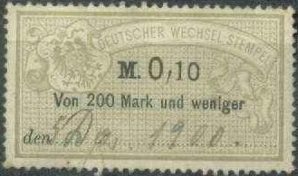
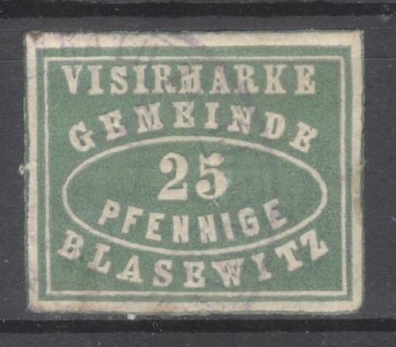

{kind=link}

Return To Catalogue - Germany overview
Note: on my website many of the
pictures can not be seen! They are of course present in the
catalogue;
contact me if you want to purchase it.
Examples:
The following values were issued (stamps blue, value in grey): 1 g, 1 1/2 g, 3 g, 4 1/2 g, 6 g, 7 1/2 g, 9 g, 12 g, 15 g, 22 1/2 g, 30 g, 45 g, 60 g, 90 g, 150 g and 300 g.
Similar stamps, but with inscription 'NORDDEUTSCHER WECHSEL STEMPEL' were issued for the North German Federation. The 1 1/2 g and 3 g seem to exist with erroneous inscription 'NORDDEUTSCHER'.
I've seen a sheet with 45 300 g stamps on it,
part of a French war debt of 300,000 Thalers after the French
German war, which was paid in Paris 1st March 1872. The text on
the backside reads:
"Monsieur P. Bleichroder a Berlin
Nous vous prions de vouloir bien, a partir du quinze Mars
courant,
tenir a la disposition du Tresor Francais vu de la personne
qui vous sera designee par qui, contre remise de la presente
delegation dument acuittee la somme de
trois millions cinq cent mille thalers de Prusse, dont il vous
plaira debiter notre compte, suivant notre avis
Agreez monsieur, nos sinceres salutations."
(Signed by the minister of Finance)
The following values exist: 0.10 M, 0.15 M, 0.30 M, 0.45 M, 0.60 M, 0.75 M, 0.90 M, 1.20 M, 1.50 M, 2.25 M, 3 M, 4.50 M, 6 M, 9 M, 15 M and 30 M. They have all the colour lilac with the value in black.
'DEUTSCHER WECHSEL STEMPEL' 0.20 M lilac and red, different
design
The following values exist: 0.10 M, 0.20 M, 0.30 M, 0.40 M, 0.50 M, 1 M, 1.50 M, 2 M, 2.50 M, 3 M, 3.50 M, 4 M, 4.50 M, 5 M, 10 M, 15 M, 30 M.

I have also seen a value M0,10 and M1,00 in the colour green (text black) issued in 1887, they have 'den...... 18...' at the bottom. I have seen similar stamps in violet (text black) issued in 1881 (M0,10, M0,20, M0,50) with the same text at the bottom. Also M1,50, M2,00, M2,50, M3,00, M4,00 in green. In 1900 the '18' was removed from the bottom, I have seen M0,10, M0,20 (both in green), M1,00, M1,50, M2,00, M2,50, M3,00, M3,50, M4,00, M4,50, M5,00 (all in violet). Furthermore M10,00, M15,00 (picture above), M18,00, M20,00, M25,00, M30,00 and M50,00 (all in red with green underprint).
These stamps exist in two values 5 g (or 17 1/2 k, green and black) and 10 g (or 35 k, orange and black). Both currencies appear on one stamp.
I have seen in the above design (woman facing the right, first issued in 1899): 5 p brown, 5 p blue, 10 p red, 15 p grey, 20 p blue, 25 p orange, 30 p brown, 40 p violet, 50 p lilac and 75 p green.
The higher values of this series have a woman facing the left: I have seen: 1 M green and red, 1 1/2 M brown and lilac, 2 M blue and grey, 3 M brown and grey and 4 M blue and grey. I've also seen the 1 1/2 M brown and lilac with a red 'Danzig' overprint.
(Statistische Gebuhr)
Stamps in the above design were first issued in 1880 in the values 5 p blue, 10 p blue, 20 p blue, 50 p blue, 1 M red, 2 M red, 4 M red, 5 M red and 10 M red. Later more values were issued, such as 20 M red, 50 M red, 100 M red, 1000 M red, 100.000.000.000 M (100 Milliarden) green value shown above.
Various designs were issued in 1922;
Design resembling the above 20 M: 5 M green, 10 M green and lilac
Eagle design: 50 M (eagle design)
Value in a diamond: 500 M brown and blue, 1000 M black and lilac,
2000 M red and green, 3000 M brown and light brown, 5000 M orange
and blue,
Value in large ellipse: 10000 M red, 20000 M green, 50000 M
brown, 100000 M blue, 500000 M lilac, 1000000 M orange, 5000000 M
red, 10000000 M light brown.
Some fiscal stamps of Saxony with inscription 'STEMPELMARKE' (no country name indicated), that could easily be mistaken for fiscal stamps of the German Empire, click here for more fiscal stamps of Saxony in the same designs:
Some local fiscal stamps of the city of Reutlingen (Waaggebuhr):
The octogonal design (as the 30 p above) was issued in 1875, the following values exist: 1 p black, 3 p violet, 6 p yellow, 12 p red, 30 p green and 60 p blue. In the square design (as the 50 p) exist: 1 p, 2 p, 3 p, 4 p, 5 p, 6 p, 7 p, 8 p, 9 p (all in black), 10 p brown, 20 p red, 30 p green, 40 p yellow, 50 p red, 60 p blue, 70 p green, 80 p orange, 90 p violet and 1 m black.
"Polizei-Amt Altona Quittung uber Auskunftsgebuhr";
this stamp was issued in 1906.

1881; 25 p green, inscription "VISIRMARKE GEMEINDE BLASEWITZ
25 PFENNIGE"
Inscription 'VISIRMARKE Stadtrath Dobeln', 25 p green.
Arms of Dresden, inscription 'Visirmarke' or 'Visiermarke' and 'K.S. POLIZEI - DIREKTION DRESDEN'
1902 25 p issue
The first stamp in this design was issued in 1863 in the value 2 1/2 n green (imperforate). A perforated version appeared in 1865. The value was changed to 25 pfge green in 1870. A slightly different design (smaller letters) was issued in 1900 (again 25 p green). Finally, in 1902, the inscription was changed from 'Visir' to 'Visier' (25 p green).
1905 issue, inscription 'Konigl. Polizei Direktion Dresden'
In 1905 the above stamp in a new design was issued '25 Pfennig' (in black) and green.
In 1911 a larger sized stamp was issued 50 p green and black.
Issued first in 1904 on a white background (25 pfg) and on a red
background (30 pfg) and then again a 25 pfg value on a red
background in 1909.
1909 Inscription "VISIRMARKE STADT MARIENBERG" 25 p
blue.
In 1895 the first fiscal stamps were issued with
inscription "Rath zu Meissen" in 25 p green and
"Visirmarke RATH ZU MEISSEN" in 30 p green, 50 p green
and 1 M green (perforated or imperforate).
A new design with "Visiermarke STADTRAT ZU MEISSEN"
appeared in 1905 in the values 25 p green (2 types?), 30 p red,
50 p blue and 1 M yellow.
"VISIRMARKE GEMEINDE NIEDERLOSSNITZ 25 PFENNIGE"
"VISIRMARKE GEMEINDE PIESSCHEN" 25 pfennige blue. A 25
p green should also exist.
25 Pfge blue (issued 1905)
Inscription "STADTRATH SCHNEEBERG STEMPELMARKE"; the
values 25 p blue and black, 1 M grey and black and 5 M red and
black were issued in 1890. A surcharged stamp "25" on 1
M grey and black was issued in 1905.
1908 inscription "VISIRMARKE POLIZEIVERWALTUNG DER STADT
WEHLEN"
Inscription "VISIRMARKE WEISSER HIRSCH 25 PFENNIGE" 25
p green.
"Visirmarke STADRATH ZITTAU Gebuhr 25 Pfg"; a few
designs exist (issued from 1869 to 1903).
Inscription 'Stadt Duisburg':
Stamps in this design were first issued in 1907 (25 p green and black and 50 p red and black).
Fiscal Stamps - Stempelmarken - Timbres-fiscaux
{kind=link}
{kind=link}
{kind=link}